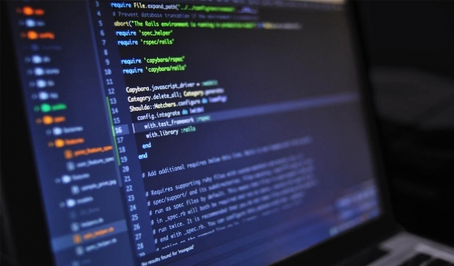

Merhabaa!
Ben Maide, öncelikle bu web sitesi benim ilk girişimim, çok iyi görünmediğinin farkındayım ama umarım gelecekte burada bazı değişiklikler yapabilir ve daha iyi bir görüntüye sahip olabilirim... Kendimden kısaca bahsetmem gerekirse, şuanda 23 yaşında ve hala üniversite öğrencisiyim... Ama durun en azından bu ikinci bölümüm. Yani aynı bölümde sürünmüyorum, yani yine sürünüyorum ama neyse... Bir kardeşim var benden 5 yaş küçük oda bu sene Konya'da Tıp okumaya başladı. Bundan önce İstanbulda yaşıyordum Sakarya Üniversitesini kazınınca buraya taşındık. İstanbul'a hayran biri olarak Sakarya beni pek büyülemedi, ama nefrette etmedim. Sakinliği şimdilik huzur veriyor ama gelecekte bu sakinlik boğadabilir...
Dil öğrenme konusuna meraklıyımdır, İngilizceyi akıcı bir şekilde konuşabiliyorum ve 3 yıldırda Japoncada kendimi geliştirmeye çalışıyorum, pek iyi gittiğim söylenemez ama berbatta değilim, en azından anime izlerken çoğu şeyi anlıyorum.
3 yıl önce örgü örmeyi öğrendiğimden beri buda benim için bir terapi oldu diyebiliriz, kendi kendime youtube'dan örgü örmeyi öğrenip etrafımdaki herkese atkı hediye ettiğim bir dönem vardı...

Bilgisayarlar yada genel olarak bilişim dünyası daha çok küçükken oyun oynamakla da olsa beni hep cezbederdi, her ne kadar işin içine girince bambaşka boyutlarda olduğunu anlamış olsamda bu bana bir zorunluluk gibi değilde keşfedilecek bir serüvenmiş gibi geliyor... Aslında bu söylediğim az önce yukarıdaki "login" fotoğrafını tutturmaya çalışırken yaşadığım sinir kriziyle pek örtüşmüyor ama üstesinden geldikten sonra insan çabucak unutuyor işte... Bir ödev için oluşturduğum bu web sitesi bir bloga dönüşmeden sözlerimi tamamlamak istiyorum... Umarım gelecekte daha iyi işlerde buralarda olurum, şimdilik hoşçakalıınn!